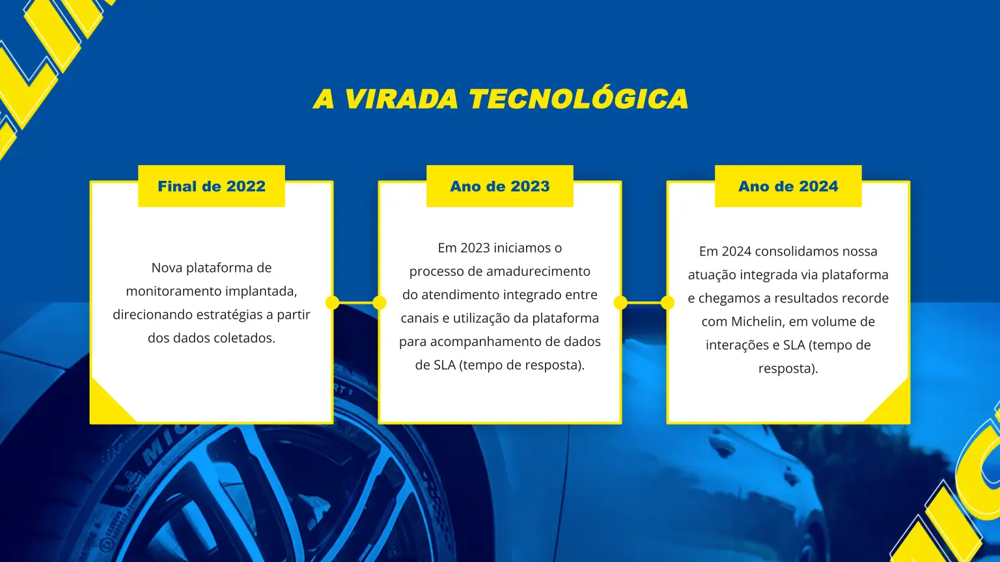
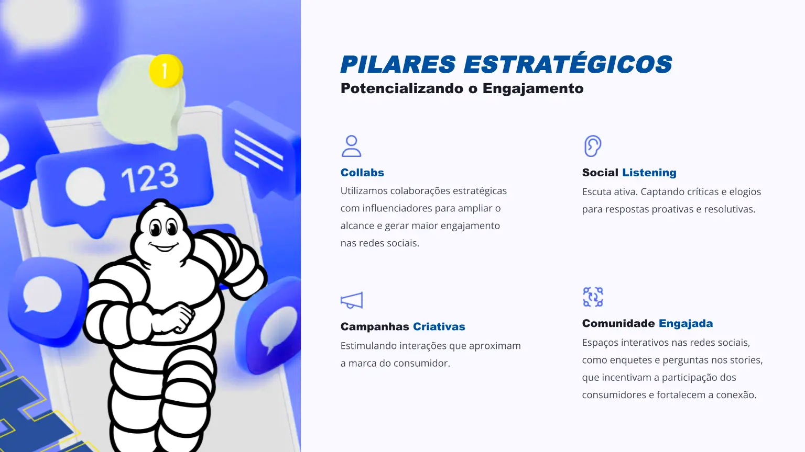
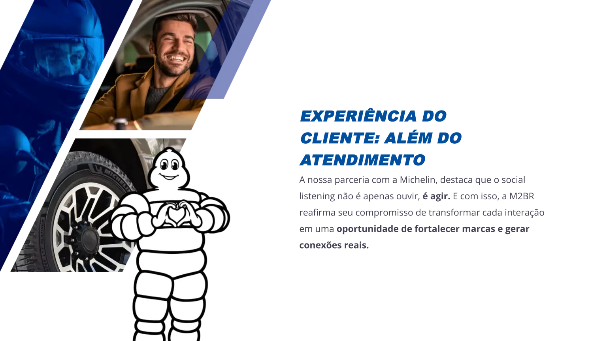
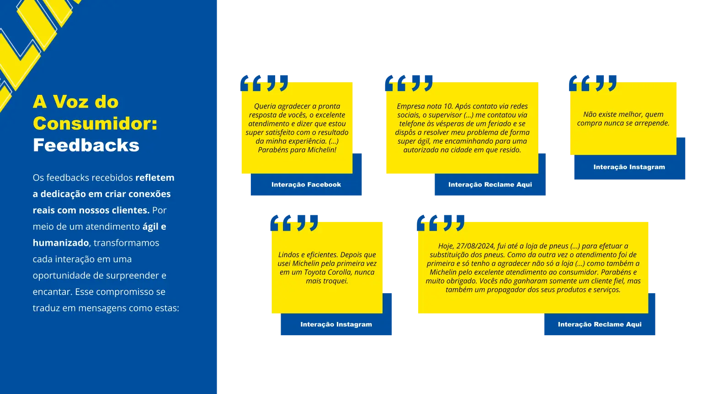
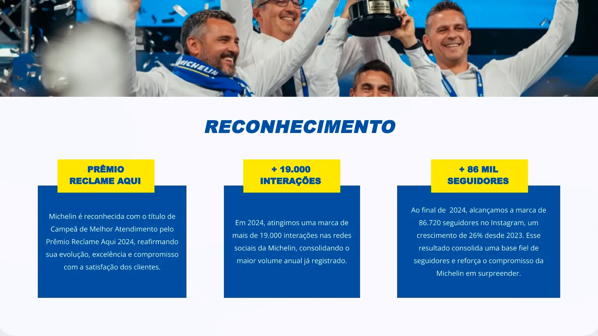
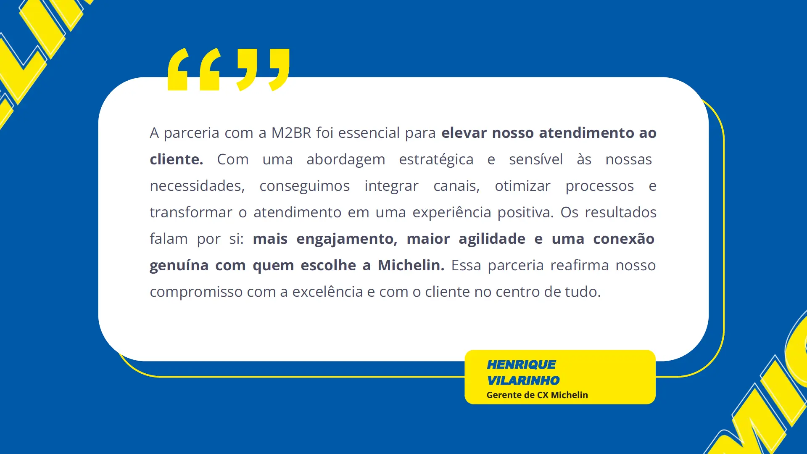

Michelin
Transformando atendimento em experiência do cliente
Integração de Canais
Garantir comunicação consistente em múltiplas plataformas, alinhado ao tom de voz Michelin.
Otimização do SLA
Compromisso em respostas com agilidade sem comprometer a qualidade do atendimento.
A virada tecnológica
Nova plataforma de monitoramento implantada, direcionando estratégias a partir dos dados coletados.
Iniciamos o processo de amadurecimento do atendimento integrado entre canais e utilização da plataforma para acompanhamento de dados de SLA (tempo de resposta).
Consolidamos nossa atuação integrada via plataforma e chegamos a resultados recorde com Michelin, em volume de interações e SLA (tempo de resposta).
Presença digital e social

Social Media
EngajamentoPilares estratégicos — potencializando o engajamento
Collabs
Utilizamos colaborações estratégicas com influenciadores para ampliar o alcance e gerar maior engajamento nas redes sociais.
Social Listening
Escuta ativa. Captando críticas e elogios para respostas proativas e resolutivas.
Campanhas Criativas
Estimulando interações que aproximam a marca do consumidor.
Comunidade Engajada
Espaços interativos nas redes sociais, como enquetes e perguntas nos stories, que incentivam a participação dos consumidores e fortalecem a conexão.
A voz do consumidor
Os feedbacks recebidos refletem a dedicação em criar conexões reais com nossos clientes. Por meio de um atendimento ágil e humanizado, transformamos cada interação em uma oportunidade de surpreender e encantar.
Quero agradecer a pronta resposta de vocês, o excelente atendimento e dizer que estou super satisfeito com o resultado da minha experiência. Parabéns para Michelin!
Interação FacebookEmpresa nota 10. O supervisor me contatou via telefone e se dispôs a resolver meu problema de forma super ágil, me encaminhando para uma autorizada na cidade em que estou.
Interação Reclame AquiNão existe melhor, quem compra nunca se arrepende.
Interação InstagramLindos e eficientes. Depois que usei Michelin pela primeira vez em um Toyota Corolla, nunca mais troquei.
Interação InstagramO atendimento foi de primeira e só tenho a agradecer. Vocês não ganharam somente um cliente fiel, mas também um propagador dos seus produtos e serviços.
Interação Reclame AquiExpansão e qualidade
Evolução contínua

Reconhecimento e resultados
Michelin é reconhecida com o título de Campeã do Melhor Atendimento pelo Prêmio Reclame Aqui 2024, reafirmando sua evolução, excelência e compromisso com a satisfação dos clientes.
Em 2024, atingimos uma marca de mais de 19.000 interações nas redes sociais da Michelin, consolidando o maior volume anual já registrado.
86.720 seguidores no Instagram, um crescimento de 26% desde 2023. Esse resultado consolida uma base fiel de seguidores e reforça o compromisso da Michelin em surpreender.
“ Social Listening não é apenas ouvir — é agir. ”
A nossa parceria com a Michelin reafirma o compromisso de transformar cada interação em uma oportunidade de fortalecer conexões reais.
Michelin em ação

Campanhas criativas
Comunidade engajada
Excelência no atendimento

Gostou do que viu?